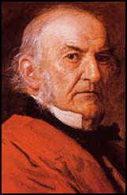

William Ewart Gladstone (1809-1898)

Ýngiliz devlet ve siyaset adamlarýndandýr. Uzun yýllar bakanlýk ve baþkanlýk yapmýþtýr. Baþbakanlýðý döneminde, bir asýrdan beri süregelen ve Osmanlý toprak bütünlüðünün korunmasýndan yana olan Ýngiliz politikasýný deðiþtirmiþ ve Osmanlý topraklarýnýn parçalanmasý, küçük devletlerin kurulmasý þeklinde bir politika izlemeye baþlamýþtýr. Ýslamiyet’e ve Türklere düþmanlýðý ile tanýnmýþtýr.“Bu Kur’an Müslümanlarýn elinde bulunduðu müddetçe, biz onlara hakiki hâkim olamayýz. Ne yapýp yapýp, bu Kur’an’ý sükût ettirip ortadan kaldýrmalýyýz. Yahut da Müslümanlarý ondan soðutmalýyýz” mealindeki sözlerin sahibi olup, bu sözleri Sömürgeler Bakaný olduðu sýralarda Ýngiliz Avam Kamarasýnda sarf etmiþtir.
Ýskoç asýllý olan Gladstone, zengin bir ailenin çocuðu olarak 1809 yýlýnda Liverpool’da doðdu. Eton Koleji’ni bitirdikten sonra Oxford Üniversitesinde okudu. Çok genç yaþta parlamentoya girdi (1832). Siyasi hayatýna Muhafazakârlarýn yanýnda yer alarak baþladý. Kendi partisinin iktidarýnda önce Ticaret (1843-45), ardýndan da Sömürgeler Bakaný (1845-46) oldu.
Gladstone, bir süre sonra Muhafazakârlardan ayrýlarak Liberal Partiye katýldý ve 1852 yýlýnda baþlayan ve 1866 yýlýna kadar devam eden uzun bir süre boyunca Maliye Bakanlýðý yaptý. Liberal Partiye katýldýktan sonra Muhafazakârlarla aralarýnda yýllarca süren bir çekiþmenin içine girdi. Bu görevi sýrasýnda bazý önemli deðiþiklikler yaptý. Vergilerde indirime gitti. Devletin, bireylerin üzerindeki etkisini azami ölçüde azaltmak ve daha özgür hareket imkâný tanýmak maksadýyla reformlarýn yapýlmasý gerektiðini savundu. Söz konusu reform isteði daha sonra iktidara gelen Muhafazakârlar tarafýndan da destek buldu ve uygulandý.
1864 yýlýnda Avam Kamarasýnda yer alan Liberallerin baþýna geçen Gladstone, 1868 yýlýnda da baþbakan oldu. Altý yýl süren baþbakanlýðýndan sonra, Muhafazakârlar iktidara gelince, baþbakanlýktan ayrýlmak zorunda kaldý. 1875 yýlýnda parti yönetiminden ayrýldýysa da, bir yýl gibi kýsa bir süre sonra tekrar siyasete dönerek partisinin baþýna geçti. Özellikle Muhafazakârlarýn Yakýndoðu politikasýnýn sert eleþtirilere uðramasý ve pasiflikle itham edilmeleri Gladstone’un iþine yaradý. Bulgaristan meselesinde, Osmanlý Devletinden yana tavýr takýnan Muhafazakârlarý sert þekilde eleþtirdi.
Bir süre iktidardan uzak kalan Liberallerin 1880 seçimlerinden zaferle çýkmalarý, Gladstone’a tekrar baþbakan olma fýrsatýný verdi. Seçimlerin ardýndan ikinci kez baþbakan oldu ve 1885 yýlýna kadar bu görevi sürdürdü. Bu tarihten itibaren, Ýngiliz siyasetinde önemli deðiþikler meydana geldi. Özellikle Osmanlý-Ýngiliz iliþkilerinde çok önemli geliþmeler yaþandý.
Ýngiltere, Ruslarýn yayýlmasýna paralel olarak, kendi menfaatlerini açýsýndan da uygun düþmesinden ötürü, özellikle 18. yüzyýlýn son çeyreðinden itibaren, Osmanlý Devletinin toprak bütünlüðünün korunmasýndan yana bir politika izledi. Uluslararasý anlaþmazlýklarda, bahusus Osmanlý-Rus mücadelelerinde bu politikayý yüz yýl boyunca devam ettirdi. Bu durum Gladstone’un 1880 yýlýnda baþbakanlýða geliþine kadar devam etti. Yeni baþbakan bu siyaseti terk ederek, Osmanlý Devletinin topraklarýnýn parçalanmasý ve özellikle Ermeni devleti kurulmasý yönünde ciddi faaliyetlerde bulundu.
Gladstone, Ermeni devletinin kurulmasýyla Ruslara karþý bir tampon bölgenin oluþturulacaðýný ve bu þekilde Ruslarýn güneye inmesinin engelleneceðini savundu. Böylece Ermenistan, Ruslara karþý Ýngilizlerin ileri bir karakolu durumuna gelecekti. Bu amaçla, Doðu Anadolu’dan Ermenistan diye söz edildiði ve uzak köþelere kadar Ýngiliz Konsolosluklarýnýn kurulduðu görüldü. Protestan misyonerlerin bölgedeki sayýlarý arttýrýldý. Ayrýca, Londra’da bir Ýngiliz-Ermeni komitesi teþkil edildi. Ýngilizlerin faaliyetlerini takip eden Fransýz Büyükelçisi Paul Cambon; Ermenilerin örgütlenerek disiplin altýna alýndýklarýný, propagandacýlarýn Londra’dan yönlendirildiklerini, “Millet-i Sadýka” olarak bilinen Ermenilerin tahrik edildiklerini, 1894 yýlýnda Paris’e gönderdiði raporunda belirtmektedir (http://www.ermenisorunu.gen.tr/turkce/makaleler/makale8.html).
Gladstone’un izlediði politikaya paralel olarak, Ýngiliz kamuoyunda da Osmanlýlara karþý büyük bir kampanyanýn baþladýðý dikkati çekmektedir. Özellikle kamuoyunu Osmanlý aleyhine yönlendirmek gayesiyle, ülkemizde meydana gelen olaylar abartýlarak, azýnlýklarýn ve Osmanlý egemenliði altýnda yaþayan milletlerin zulme uðradýðý þeklinde aktarýldý. 1897 yýlýnda yapýlan Osmanlý-Yunan Savaþý, “Türk barbarlýðý”, “Türk vahþeti” vb. baþlýklarla basýnda yer aldý. Diðer taraftan, Gladstone’un, “Türkler Asya'nýn içlerine geri sürülmelidir” þeklindeki ifadeleri de yapýlan düþmanlýða önemli bir örnek teþkil etmektedir.
Gladstone’un bu yaklaþýmý ve izlenen politikalardan, Ýslam dini ve Müslümanlara karþý olan düþmanlýklarý da önemli ölçüde etkili oldu. (http://www.mfa.gov.tr/turkce/gruph/hg/hga/09.htm) Büyük bir sömürge imparatorluðu kuran Ýngilizlerin bu sömürgeleri ellerinde tutabilmek için baþvurduklarý önemli yollardan bir tanesi Müslümanlar arasýndaki baðlarý zayýflatmak, özellikle Osmanlýlar ve birbirleriyle olan iliþkilerini bozmayý siyasetlerinin önemli bir temel taþý olarak gördüler. Ayrýca, dini hassasiyetlerini zayýflatmak ve bu yolla din kardeþliði baðýný zayýflatmayý hedeflediler. Henüz Sömürgeler bakaný iken Gladstone’un sarf ettiði sözler bu açýdan dikkat çekicidir:
“Bu Kur’an Müslümanlarýn elinde bulunduðu müddetçe, biz onlara hakiki hâkim olamayýz. Ne yapýp yapýp, bu Kur’an’ý sükût ettirip ortadan kaldýrmalýyýz. Yahut da Müslümanlarý ondan soðutmalýyýz” dediði, Ýngiliz Avam Kamarasýndaki konuþmasýyla, Ýngiliz politikasýný ve izlenmesi gereken siyaseti dile getirmiþtir. (www.yeniasya.org.tr/index.asp?Section=SaidNursi)
Bediüzzaman, bu sözleri Van Valisi Tahir Paþa vasýtasýyla bir gazete haberinden öðrendi. Bu sözlere karþý Bediüzzaman Hazretleri; “Ben de Kur’an’ýn sönmez ve söndürülemez ebedi bir güneþ gibi mucize olduðunu dünyaya ilân edeceðim” demek suretiyle hayatýnýn temel gayesini ortaya koydu. Böylece, Kur’an-ý Kerim’in asrýmýza bakan manevi mucizesini insanlara ispat etme kararýný verdi. Risale-i Nur Külliyatý bu kararýn neticesi olarak ortaya çýktý.
Gladstone, 1880 yýlýnda baþladýðý baþbakanlýk görevini beþ yýl sürdürdü. Daha sonra iki kez daha, 1886 ve 1892 yýllarýnda baþbakan oldu. Dördüncü kez yaptýðý baþbakanlýk görevinden 1894 yýlýnda istifa etti. Uygulamak istediði bazý kararlarýnýn Lordlar Kamarasý tarafýndan reddedilmesinden dolayý bu kararý aldý.
Osmanlý kamuoyu tarafýndan dikkatle izlenen Gladstone, baþbakanlýða her geliþinde, Osmanlý devlet adamlarýnýn endiþelenmesine sebep oldu. Çünkü, onun düþmanca davranýþlarý ve uyguladýðý siyaset büyük rahatsýzlýklara sebep olmakta ve Babýali’de, her geliþi en büyük felaket haberi olarak karþýlanmaktaydý.
1894 yýlýnda baþbakanlýktan istifa ettikten sonra dört yýl daha yaþayan Gladstone, 1898 yýlýnda Hawarden’de öldü.